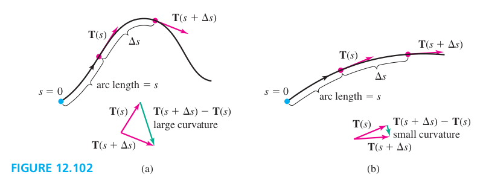
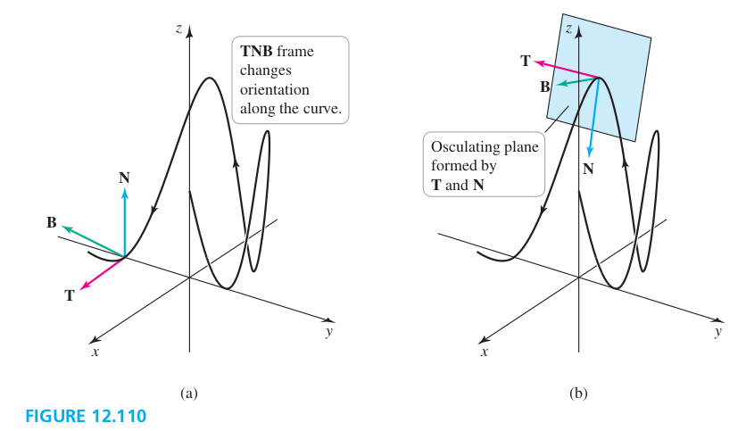

If a small increment in arc length Δs along the curve results in a large change in the direction of T, the curve is turning quickly over that interval and we say it has a large curvature ( Figure 12.102a). If a small increment Δs in arc length results in a small change in the direction of T, the curve is turning slowly over that interval and it has a small curvature (Figure 12.102b). The magnitude of the rate at which the direction of T changes with respect to arc length is the curvature of the curve.

Let r describe a smooth parameterized curve. If s denotes arc length and T=∣r′∣r′ is the unit tangent vector, the curvature is κ(s)=∣dsdT∣.
(1) - ∣v∣T and dtd(∣v(t)∣)T form aT×bT, where a and b are scalars. Therefore aT and bT are parallel vectors and aT×bT=0.
(2) - T and dtdT are orthogonal. Therefore, the magnitude of the second term simplifies as follows:
Solving for the curvature gives κ=∣v∣3∣v×a∣, where v=r′ is the velocity and a=v′ is the acceleration.
Principal Unit Normal Vector
Let r describe a smooth parameterized curve. The principal unit normal vector at a point P on the curve at which κ≠0 is
N(s)=∣dT/ds∣dT/ds=κ1dsdT
In practice, we use the equivalent formula
N(t)=∣dT/dt∣dT/dt
evaluated at value of t corresponding to P.
Proerties of the Principal Unit NOrmal Vector
Let r describe a smooth parameterized curve with unit tangent vector T and principal unit normal vector N.
1. T and N are orthogonal at all points of the curve; that is, T(t)⋅N(t)=0 at all points where N is defined.
2. The principal unit normal vector points to the inside of the curve - in the direction that the curve is turning.
Components of the Acceleration
The acceleration vector of an object moving in space along a smooth curve has the following representation in terms of its tangential componentaT (in the direction of T) and its normal componentaN (in the direction of N):
aaNaT=aNN+aTT=κ∣v∣2=∣v∣∣v×a∣=dt2d2s
The Binormal Vector and Torsion
Define the unit binormal vectorB=T×N. B is orthogonal to both T and N. Becase T and N are unit vector, B is also a unit vector. T,N and B form a right handed coordinate system that changes its orientation as we move along the curve. This coordinate system is ofen called the TNB frame.

The rate at which the curve C twists out of the plane determined by T and N is the rate at which B changes as we move along C, which is dSdB.
(1) - dsdB is orthogonal to both T and dsdN, because it is the cross product of T and dsdN.
(2) - dsdB is orthogonal to B. (Theorem 12.8)
(3) - From (1) and (2), dsdB is orthogonal to both T and B, so it must be parallel to N. We write
dsdB=−τN
where the scalar τ is the torsion. Notice that ∣dsdB∣=∣−τN∣=∣−τ∣, so the magnitude of the torsion equals the magnitude of dsdB, which is the rate at which the curve twists out of the TN-plane.
We take the dot product of both sides of the equation defining the torsion with N.
dsdB⋅NdsdB⋅N⇒τ=−τN⋅N=−τ=−dsdB⋅N
Let C be a smooth parameterized curve with unit tangent and principal unit normal vectors T and N, respectively. Then, at each point of the curve at which the curvature is nonzero, the unit binormal vector is
B=T×N
and the torsion is
τ=−dsdB⋅N
Examples
(9) Torsion of a helix Compute the torsion of the helix r(t)=⟨acost,asint,bt⟩ for t⩾0, with a>0 and b>0.